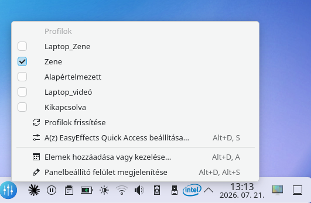

KDE Plasma panel-widget az EasyEffects gyors eléréséhez: egy kattintás a megnyitáshoz, jobb klikk a hangprofilok listázásához.
EasyEffects Quick Access
Mi ez?
Az EasyEffects Quick Access egy könnyű KDE Plasma panel-widget, ami gyors elérést biztosít az EasyEffects hangprofiljaihoz. Bal kattintással megnyílik az EasyEffects alkalmazás, jobb kattintással pedig azonnal listázza és váltja az elmentett hangprofilokat, anélkül hogy külön ablakot kellene nyitni.
Képernyőképek


Telepítés
Megjegyzés: ez a csomag nem APT repóból érkezik, tehát
sudo apt upgrade nem frissíti automatikusan.
Új verzió esetén a .deb-et innen kell újra letölteni,
majd sudo dpkg -i paranccsal újratelepíteni
(ez felülírja a régi verziót).
Dokumentáció
Használati útmutató és gyakran ismételt kérdések a közös dokumentáció oldalon érhetők el. Fejlesztői/technikai dokumentáció később kerül fel.
Dokumentáció megnyitása »